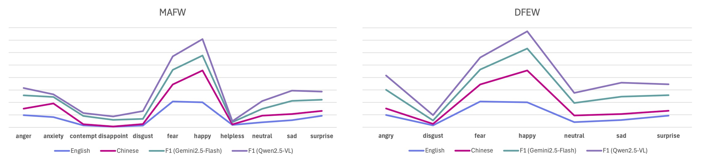
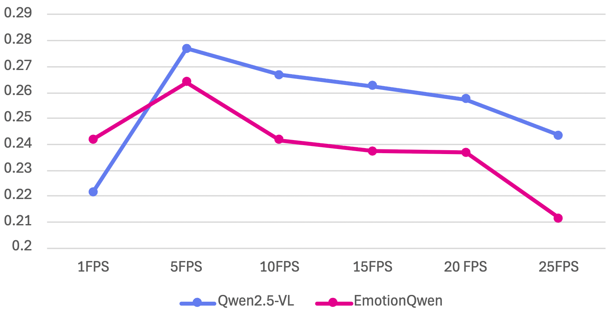

Understanding emotions is a fundamental ability for intelligent systems to be able to interact with humans. Vision-language models (VLMs) have made tremendous progress in the last few years for many visual tasks, potentially offering a promising solution for understanding emotions. However, it is surprising that even the most sophisticated contemporary VLMs struggle to recognize human emotions or to outperform even specialized vision-only classifiers. In this paper we ask the question “Why do VLMs struggle to recognize human emotions?”, and observe that the inherently continuous and dynamic task of facial expression recognition (DFER) exposes two critical VLM vulnerabilities. First, emotion datasets are naturally long-tailed, and the web-scale data used to pre-train VLMs exacerbates this head-class bias, causing them to systematically collapse rare, under-represented emotions into common categories. We propose alternative sampling strategies that prevent favoring common concepts. Second, temporal information is critical for understanding emotions. However, VLMs are unable to represent temporal information over dense frame sequences, as they are limited by context size and the number of tokens that can fit in memory, which poses a clear challenge for emotion recognition. We demonstrate that the sparse temporal sampling strategy used in VLMs is inherently misaligned with the fleeting nature of micro-expressions (0.25–0.5 seconds), which are often the most critical affective signal. As a diagnostic probe, we propose a multi-stage context enrichment strategy that utilizes the information from ‘in-between’ frames by first converting them into natural language summaries. This enriched textual context is provided as input to the VLM alongside sparse keyframes, preventing attentional dilution from excessive visual data while preserving the emotional trajectory.
1. Emotion recognition inherits a long-tail bias. Per-class VLM accuracy correlates strongly with the lexical frequency of emotion terms in web-scale text, with cross-lingual consistency (English & Chinese) pointing to a deep linguistic/cultural skew rather than mere pre-training statistics.

Correlation between lexical frequency and VLM accuracy. Per-class F1 plotted against Google Books Ngram frequency on MAFW and DFEW. Rarer emotions (e.g. contempt, helplessness) have lower lexical frequency and weaker VLM performance.
2. Rare emotions collapse into common ones. Confusion matrices reveal a strong ‘neutral’ sink: low-frequency emotions are systematically absorbed into high-frequency categories. Decoupled pretrain-then-balanced fine-tuning makes predictions markedly more uniform, confirming the issue is data bias rather than incapacity.

Confusion matrices on MAFW. Original distribution (top row) vs. balanced fine-tuning (bottom row), for MAE-DFER, HiCMAE and Qwen2.5-VL. Balancing reduces head-class collapse and improves tail-class recall.
3. More frames is not better — attention gets diluted. Accuracy rises then falls as frame rate increases (peaking near 5 FPS), as redundant visual tokens saturate the context window. VLMs are also largely indifferent to frame shuffling, revealing an order-agnostic ‘bag-of-frames’ processing strategy.

VLM performance vs. input frame rate. Macro-F1 of Qwen2.5-VL and EmotionQwen on MAFW. The quasi-bell-shaped curve shows performance improving (1–5 FPS) then degrading (>5 FPS) — evidence of attentional dilution from redundant visual tokens.
| Model | Setting | MAFW | DFEW | ||||
|---|---|---|---|---|---|---|---|
| Precision | Recall | F1 | Precision | Recall | F1 | ||
| Vision-only classifiers | |||||||
| MAE-DFER | Original | 0.4394 | 0.3919 | 0.3602 | 0.6883 | 0.6086 | 0.5645 |
| Shuffled | 0.4959 | 0.3354 | 0.3041 | 0.5006 | 0.5229 | 0.4802 | |
| HiCMAE | Original | 0.5040 | 0.4404 | 0.3993 | 0.6935 | 0.6214 | 0.5725 |
| Shuffled | 0.4979 | 0.3778 | 0.3345 | 0.4807 | 0.5329 | 0.4797 | |
| Vision-Language Models | |||||||
| Qwen2.5-VL | Original | 0.2849 | 0.2727 | 0.2449 | 0.5053 | 0.4614 | 0.4552 |
| Shuffled | 0.3527 | 0.2727 | 0.2506 | 0.5015 | 0.4643 | 0.4534 | |
| Qwen2.5-Omni | Original | 0.4517 | 0.3253 | 0.3060 | 0.5557 | 0.4700 | 0.4296 |
| Shuffled | 0.4502 | 0.3172 | 0.2972 | 0.5276 | 0.4614 | 0.4226 | |
| Qwen3-VL | Original | 0.4180 | 0.3313 | 0.2738 | 0.6380 | 0.5843 | 0.5511 |
| Shuffled | 0.3198 | 0.3273 | 0.2615 | 0.6468 | 0.5871 | 0.5538 | |
| EmotionQwen | Original | 0.3478 | 0.2925 | 0.2581 | 0.5521 | 0.5329 | 0.5010 |
| Shuffled | 0.3185 | 0.3057 | 0.2517 | 0.5383 | 0.4968 | 0.4895 | |
| Video-LLaVA | Original | 0.1126 | 0.1630 | 0.0870 | 0.1490 | 0.2800 | 0.1654 |
| Shuffled | 0.0811 | 0.1569 | 0.0814 | 0.1514 | 0.2570 | 0.1531 | |
| LLaVA-NeXT-V | Original | 0.1853 | 0.2040 | 0.1438 | 0.5351 | 0.3474 | 0.2969 |
| Shuffled | 0.1705 | 0.1980 | 0.1382 | 0.4366 | 0.3314 | 0.2712 | |
| InternVL-3.0 | Original | 0.3441 | 0.2828 | 0.2445 | 0.5561 | 0.5357 | 0.5044 |
| Shuffled | 0.3370 | 0.2667 | 0.2326 | 0.5669 | 0.5214 | 0.4985 | |
| Gemini2.5-Flash | Original | 0.4112 | 0.3869 | 0.3758 | 0.6412 | 0.6331 | 0.6008 |
| Shuffled | 0.4286 | 0.3817 | 0.3626 | 0.6246 | 0.6120 | 0.5778 | |
Model performance on MAFW and DFEW for normal videos vs. Frame Shuffled (FS) videos, using vision-only classifiers (top) and VLM-based architectures (bottom). Vision-only classifiers drop sharply under frame shuffling, whereas VLM scores barely move — evidence of order-agnostic ‘bag-of-frames’ processing.
VLMs face a dilemma: sparse sampling misses fleeting micro-expressions, while dense sampling floods the context window with redundant tokens. Rather than discarding the ‘in-between’ frames, MSCE translates their motion cues into compact natural-language summaries that VLMs process effectively, then interleaves these summaries with sparse keyframes for a final, temporally-aware classification.

Multi-Stage Context Enrichment (MSCE) is a two-stage inference pipeline. Top (baseline): a VLM given only sparse keyframes misses the micro-expression and predicts Neutral. Bottom (MSCE): Stage 1 converts the in-between frames into a compact motion description; Stage 2 interleaves this text with the sparse keyframes, recovering the correct label (Happiness).
@InProceedings{Agarwal_2026_ECCV,
author = {Agarwal, Madhav and Tsaftaris, Sotirios A. and Sevilla-Lara, Laura and McDonagh, Steven},
title = {Why Do Vision Language Models Struggle To Recognize Human Emotions?},
booktitle = {Proceedings of the European Conference on Computer Vision (ECCV)},
year = {2026}
}